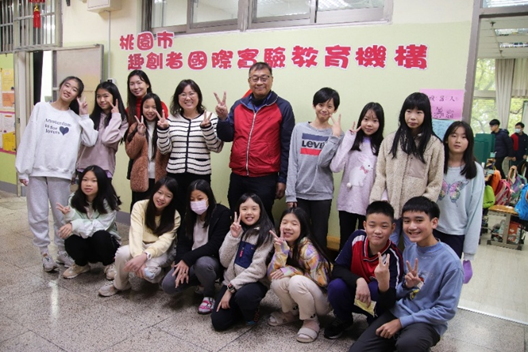
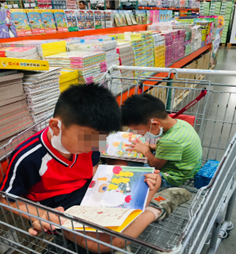
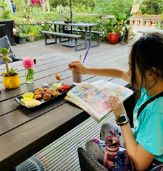
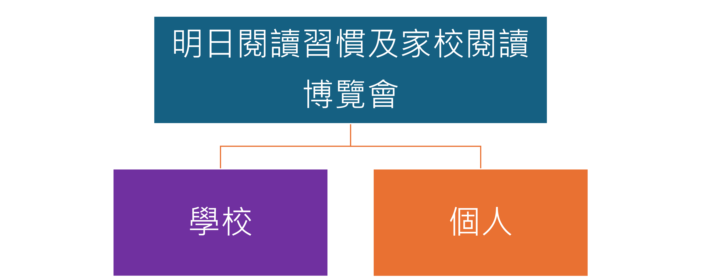

至
114年09月19日（五）中午12時止
至
115年01月31日

社團法人中華明日閱讀協會
國立中央大學
閱讀習慣運動
學校帶動家庭，建立閱讀紙本書籍習慣以取代手機育兒
因應數位時代教育的挑戰，國立中央大學推動「閱讀習慣運動」，以取代手機育兒。經過十多年推廣，台灣已有2,000多所國中小學參與「明日閱讀」計畫。在此基礎上，國立中央大學協同「中華明日閱讀協會」，正試辦「明日閱讀習慣博覽會」，從「明日閱讀1.0」演進為「明日閱讀2.0」，期以深化閱讀文化，培養學生長期穩定的閱讀紙本書習慣，為未來社會培育具備深度思維與知識力的新世代公民。
數位媒體早已無所不在—在家裡、學校、辦公室、車上，甚至在皮包與口袋裡。長時間盯著螢幕，既入迷又順從，不僅主宰了成人的生活，也因難以抗拒將手機交給孩子以安撫他們、讓他們安靜，結果手機也主宰了孩子的學習。
中央大學國家講座教授陳德懷長期從事AI與網路輔助教學的研究，並持續關注科技對人類學習所帶來的正負面影響。他指出，科技已成為有效且不可或缺的學習工具，例如，有目的地進行網路搜尋、專題研究或資料調查，都需要仰賴網路資源；同時，AI教學系統亦迅速發展，其輔導能力已有接近真人教師水準的潛力。然而，長時間使用數位媒體所造成的負面影響日益嚴重，已不容忽視。
根據政府委託2022年的「網路沉迷研究調查報告」，台灣青少年在非上學日的平均每日上網時間為6小時以上，而在上學日則為4.4小時。換算每週高達34小時以上，約為一般成人每週40小時的標準工作時間的八分之七。主要的上網活動集中在社交媒體、短影音平台與線上遊戲等。
兒福聯盟2021年的一項調查指出，高達62.5%的國小至高中生出現疑似「網路社交焦慮」，且超過一半曾遭受網路霸凌的學生情緒受到明顯影響，其中有26.0%曾一度產生自傷念頭。有研究指出，數位成癮與焦慮、憂鬱等心理問題常常共存。事實上，兒少心理健康議題已成為全球性的公共衛生危機。根據衛生福利部最新統計，2009年至2023年間，14歲以下兒少自殺通報人次由208人次大幅增加至3,365人次，15年來成長達16倍。
至於閱讀方面，長時間大量投入螢幕，已使孩子難以專注並完整閱讀一本書。在螢幕上閱讀文字時，閱讀行為往往呈現跳躍式進行，而非由左到右、由上到下的連貫閱讀，而是快速捲動、掃視，只尋找感興趣的片段資訊。大量研究已證實，螢幕閱讀不僅削弱了深度閱讀與理解的能力，也明顯影響專注力的持續性，以及知識的記憶與長期保留。
遠見《未來Family》2017年的調查也發現，孩子每週的閱讀時間僅有4.4小時（現在可能更少），甚至比每一天花在上網的時間還少。另外，國外一項研究指出，兒童的腦部網絡連結會隨閱讀時間增加而增強，隨螢幕使用時間增加而減弱。腦部網絡連結代表知識的取得，因此，閱讀多，知識增多；螢幕多，知識減少。這與我們期望孩子在成長過程中「增添知識」的目標恰恰相反。教育是否正進入「膚淺」的年代？孩子是否正在變得越來越「笨」？正如卡爾在其經典著作《網路讓我們變笨？》中所警示的那樣。
陳德懷教授指出，讓手機成為育兒工具，可能正是現代孩子所面臨的最大威脅，父母應該有意識地優先保護孩子的大腦健康與認知發展。負面的網路經驗可能成為孩子成長過程中的巨大風險。「父母不會讓孩子隨便獨自走入暗黑街頭，但現在的網路就充滿了險惡的街頭。」他補充說。
此外，陳德懷教授也提及去年刊登在《大西洋月刊》的一篇文章〈那些無法閱讀書籍的頂尖大學生〉。文中提到，「以前的學生可以看很多本書，但在過去10年間，許多學生進入大學時—即便是頂尖名校的學生—根本沒有具備完整閱讀書籍的能力。」
陳教授也指出，對於孩子的學習，紙本閱讀展現出無可取代的優勢。紙本書能提升注意力、深化理解、鞏固記憶，幫助他們打下扎實的知識與語言基礎，同時有助於深度專注與全面理解，讓學習更加有效。相比之下，螢幕閱讀中常見的分心、淺閱讀、記憶弱化等問題，皆可能阻礙學習成效。有研究指出長期使用螢幕已培養出「分散式注意力」的習慣，現代人在任何螢幕上的平均專注時間僅約半分鐘到數分鐘不等，之後就會切換其他內容。
「在需要深度理解與長期記憶的學習中，傳統紙本閱讀仍是最可靠、最有效的選擇。隨著教育持續數位化，我們應審慎權衡，在課堂與自學中維持紙本閱讀的核心地位，同時輔以適當的數位工具，才能讓學習者既享科技之便，又不失認知深度，真正達成良好的學習效果。」陳教授補充。
陳德懷教授提出「少量螢幕時間教育」，英文稱為 Screenfew Education的觀念。他認為需要推廣這個觀念，因為無論在學校或家庭中，數位裝置應僅作為學習工具，並應訂定明確且嚴謹的使用規範，以確保科技的應用回歸支持學習，而非侵蝕學習的本質。儘管某些學習活動無法完全排除數位工具，教育工作者仍應時時警覺，不需使用螢幕時，應避免使用。因此，他鼓勵多採用實體桌遊等非螢幕學習方式，或使用無螢幕裝置，例如無螢幕的實體機器人。
此外，陳教授強調，要幫助孩子遠離螢幕沉迷，並支持他們健康學習與成長，必須走兩條路：
- 以紙本取代螢幕，以閱讀紙本書習慣取代螢幕習慣。透過家庭與學校攜手推動閱讀紙本書籍，培養孩子穩定且持續的閱讀習慣，讓他們自然減少對數位媒體的依賴；
- 多親近實體世界。積極提供孩子參與各種遊戲、戶外活動與運動的機會，讓身體活動與實體世界成為生活的一部分。
陳教授指出，常見的生活場景中，例如：孩子在家空閒時，或外出與家長一同乘坐高鐵、在餐廳等候用餐、在診所候診，或在露營期間的空檔，手上拿著的，大多是手機。然而，在陳教授與同仁多年前推動實驗教育而成立的「趣創者國際實驗教育機構」中（圖一），孩子們拿著的不是手機，而是紙本書。他們是熱愛閱讀的書迷，能隨時隨地沉浸於書本的世界中（圖二）。

圖一、「趣創者國際實驗教育機構」培養出一批熱愛閱讀的學生

在搭高鐵

在好市多

在露營
在理髮時

在候機室

度假時
圖二、閱讀習慣是在學校與家庭之外也能看見的風景
該機構成立的核心目標正是培養學生閱讀紙本書的習慣。他指出，一旦建立閱讀習慣，學生閱讀書籍的數量便會隨時間持續增加；在老師或家長適當引導下，閱讀內容也會逐漸加深加廣，進而博覽群書，大量吸收知識。持續而廣泛的閱讀，不僅促進知識累積，也深化思維與邏輯推理、豐富情感，並促進人格的健全發展。該實驗教育機構的高年級（小學）學生，已有能力閱讀多本國中至高中程度的書籍。 「量變帶來質變」，學生的學習表現常有大幅進步，甚至出現超齡表現（附錄）。
為什麼閱讀習慣重要？陳教授認同一本書的作者說法：個人經驗無法支撐在複雜世界做出判斷，需要大量閱讀書籍，獲取豐富知識及其他人的經驗作為基礎，才有足夠推理能力做出正確判斷。不閱讀數百本對自身有幫助的書，就是功能性文盲。
陳教授指出，以目前傳統學校的閱讀量，絕對不足以應對未來世界的需求。唯有透過「巨量閱讀」，才能在AI時代快速變遷的社會中發揮認知優勢、定位自我，理解生活與工作的意義，並體認其對個人、家庭與社會的價值。他補充說，人們還必須能與他人及AI共同創造知識，而這一切都須以巨量且廣博的知識作為根基，而這正有賴於終身閱讀紙本書的習慣養成。
「明日閱讀習慣暨家校共讀博覽會」旨在推廣由實驗教育機構發展的進階版明日閱讀—「明日閱讀2.0」—至其他學校。鼓勵教師與家長合作，引導學生對閱讀紙本書產生興趣，並透過以身作則—一種最有效的方式—帶動孩子閱讀紙本書，再結合聊書、薦書與說書等交流活動，重新建構與深化閱讀過的內容，並拓展閱讀視野。此外，活動強調過程與結果並重。我們重視過程：持續閱讀紙本書以培養閱讀習慣的過程；同時也重視最終成果：學生閱讀紙本書習慣的建立。
紙本書閱讀習慣的建立，家庭角色比學校角色更為重要，讓學校帶動家庭閱讀的風氣至為關鍵。正如《失控的焦慮世代》作者海德特提醒家長的：「這是一段關係，你做的事，往往比你說的話影響更深，因此請檢視自己的手機使用習慣。做個好榜樣，不要一邊滑手機，一邊敷衍孩子。」
陳德懷教授提醒，建立閱讀習慣必須「三要」：要身教、要興趣、要習慣；「三不要」：不光說、不3C、不衝量。
「放下手機，拿起書本，博覽群書，與智慧同行，走向世界！」這是陳教授的期許。
附錄：實驗教育機構的學生畢業後，家長對我們的理念給予許多的肯定！有兩封學生就讀國一的時候，家長寄來的信，孩子的表現讓家長與老師都覺得難以置信。

國小實施項目
申請資格：全校每週至少2天實施MSSR
| 國小 | 第一學期 | 第二學期 |
|---|---|---|
| 每週1次家長入班共讀 | 全校30%以上班級 | |
| 每週2次家長入班共讀 | 全校50%以上班級 | |
| 親職活動日宣導及示範家校MSSR | ✔ | ✔ |
| 校長與行政人員每週1次入班共讀 | ✔ | ✔ |
| 提供隨處閱讀照片5張 | ✔ | |
| 每月提供家長入班共讀照片2張 | ✔ | ✔ |
| 家校MSSR推動成果影片（5分鐘） | ✔ |
國中實施項目
申請資格：全校30%以上班級每週至少2天實施MSSR
| 國中 | 第一學期 | 第二學期 |
|---|---|---|
| 每兩週1次家長入班共讀 | 全校20%以上班級 | |
| 每週1次家長入班共讀 | 全校20%以上班級 | |
| 親職活動日宣導及示範家校MSSR | ✔ | ✔ |
| 校長與行政人員每月2~3次入班共讀 | ✔ | ✔ |
| 提供隨處閱讀照片5張 | ✔ | |
| 每月提供家長入班共讀照片2張 | ✔ | ✔ |
| 家校MSSR推動成果影片（5分鐘） | ✔ |
報名時間
114年08月20日（三）起至114年09月19日（五）中午12時止。逾期不受理，報名時如有任何問題，請儘早反映。
申請資格
- 國小組：全校每週至少2天實施MSSR
- 國中組：全校30%以上班級每週至少2天實施MSSR
參加方式
- 線上報名表由聯絡人填寫，「明日閱讀習慣暨家校共讀博覽會校長參與同意書」由聯絡人填寫基本資料後再交由校長署名，並由聯絡人完成上傳各項報名應備表單。
- 報名方式：
-
聯絡方式：
- 聯絡人：彭小姐
- 電話：(03)422-7151分機35405
- E-mail：PTSreading@cl.ncu.edu.tw
注意事項
- 報名資料如有不實或有涉及任何違反社會善良風俗或法令之行為，主辦單位有權取消其參加者資格，並保留相關損失之法律追訴權。
- 主辦單位保留隨時修改、變更、暫停或終止本活動內容之權利，並公告於活動網站。
- 本活動依實施辦法辦理，如有未盡事宜，主辦單位得隨時補充之。